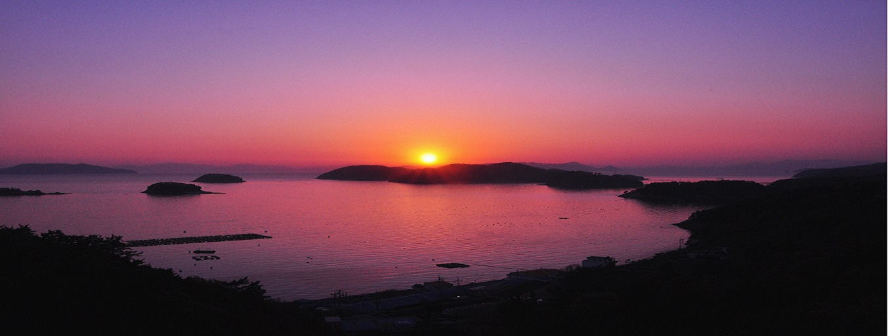
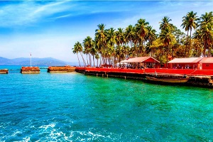
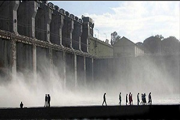
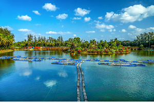
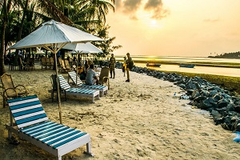
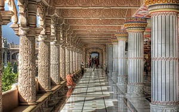
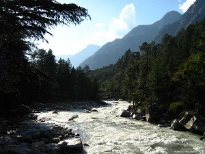
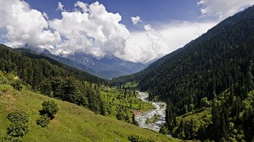
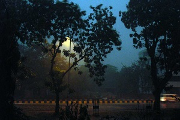

INDIA TOURISM.COM


INDIA
The land of colours and happiness, the only place where one can understand the real meaning of diversity.
India is the country which is surrounded by the Himalayas, Arabian Sea, Bay of Bengal and the Indian Ocean, as we all know that it is rich in its culture, heritage, unique style temples, wildlife, sanctuaries etc. which will attract the tourists large in number.
It is not only limited to above areas but also it has many tributaries like Sharavathi, Ganga, Yamuna, Brahmaputra, Indus and many more. Many amazing waterfalls places can also be found in almost all parts of India.
Visiting India is a dream of every foreigner because India has lot to travel and explore many adventures things. India is where the people live with much diversity. India is considered as Multi-lingual country where you can find many people who speaks different languages.
You can visit the Sunderbans located in the Thar Desert, most fascinating cities like Bombay, Delhi, Mumbai and many more, water world like Andaman's, Sea, and Ocean etc. The famous carvings places like Badami, Ajanta, Ellora, and Hampi etc.
Gajnur dam, Agumbe, Jogfalls and Tungabhadra are the favorite places that we find in Shimoga and in recent times it has become one of the famous tourist spot. India is also famous for temples like Madurai temple in Tamilnadu, Tirupati temple in Andhra Pradesh and many more.
India has many entertainment and recreational centers like PVR Cinemas in Delhi, Malls and Waterparks in Bangalore. You can also visit many eco-parks like coorg and munnar in India.
Besides this we also have peak hills, bushy forests, adventures sport like Rock Climbing, Rafting, Snow Skiing, Biking etc.
Now-a-days many improvements are made to many of the destination places to catch the attention of the tourists and to visit more in number. India is also known for the ancient monuments it has.
As we all know Chennai is the city of temples where we can find many temples built according to their tradition and native style. India is also very famous for Wildlife Park, bird sanctuaries and many adventures places who love to explore the environment.
Tourism in India-
- Andaman Nicobar Tourism

Replete with picturesque shimmering beaches, lagoons of turquoise
blue waters and a bit of history,Andaman & Nicobar Islands is a little
slice of paradise tucked around 1,400 km away from the east coast of India.
The union territory comprises a total of 572 islands, only 37 of which are
inhabited and a few are open to the tourists.
- Arunachal Pradesh tourism
 Shying away in the North eastern corner of India, Arunachal Pradesh though may be
Shying away in the North eastern corner of India, Arunachal Pradesh though may be
an introvert when it comes to tourism, is a land of abundant travel opportunities.
Adorned with unspoilt landscape, this Northeast state of India is a place that every
nature lover and explorer should visit. A treasure trove of culture, nature's beauty,
rich history and warm people, Arunachal is truly a land that you cannot afford to miss.
- Andhra Pradesh Tourism
 Blessed with two beautiful rivers, Krishna and Godavari, Andhra Pradesh has the Bay of Bengal to its west,
and it boasts of a coastline of 972km, the longest in the country.
This state is widely advertised as the Kohinoor of India by the tourism department.
The state is most visited for its world famous Tirupati temple.
Srisailam Mallikarjuneswar temple is another famous Shiva shrine and is one of the 12 Jyotirlinga temples in India.
Blessed with two beautiful rivers, Krishna and Godavari, Andhra Pradesh has the Bay of Bengal to its west,
and it boasts of a coastline of 972km, the longest in the country.
This state is widely advertised as the Kohinoor of India by the tourism department.
The state is most visited for its world famous Tirupati temple.
Srisailam Mallikarjuneswar temple is another famous Shiva shrine and is one of the 12 Jyotirlinga temples in India.
- Assam Tourism
Assam, a treasure trove of natural beauty and diverse history, is one of the least explored regions in the country,
lending it an immaculate, untouched aura that is sure to allure you.
A land of wild forests, mighty rivers, and acres and acres of tea plantations, Assam, located in North East India,
has a breath-taking landscape and is known to be one of the top biodiversity hotspots in the entire world.
One of the most beautiful states of India, Assam is the gateway to the enchanting and
unexploited northeastern part of the country.With the majestic Brahmaputra river, magnificent hills,
its rich flora and fauna, the state is every tourist's paradise.
- Bihar Tourism
 The land where the Buddha once lived, a land of monasteries - Bihar is visited by a considerable number of
Buddhist followers as well as tourists of other faiths all through the year.
Its association with Buddhism and Jainism makes it a must visit place for peace seekers,
people who would like to get a feel of the tribal culture and experience life in
the rural parts of India,and those who would like to get a glimpse of our glorious past.
The land where the Buddha once lived, a land of monasteries - Bihar is visited by a considerable number of
Buddhist followers as well as tourists of other faiths all through the year.
Its association with Buddhism and Jainism makes it a must visit place for peace seekers,
people who would like to get a feel of the tribal culture and experience life in
the rural parts of India,and those who would like to get a glimpse of our glorious past.
- Chhattisgarh Tourism

Chattisgarh, renowned for its scenic diversity and its cultural and traditional history,
is slowly growing into one of India?s most popular holiday destinations.
The oldest tribes of India dwell here, some of them for almost 10,000 years.
A blend of culture, arts and religion of the local and tribal people, Chattisgarh exhibits the instance of ancient India.
Still in its nascent stage though, Chhattisgarh is one of those off-the-beaten-track tourist
spots in India that are slowly gaining more popularity through word-of-mouth. Home to plenty of gushing waterfalls,
ancient temples and monuments, dense forests, a veritable sprinkling of flora and fauna, and a culture
that is still reminiscent of the age-old history and traditions of the state, Chhattisgarh has
everything you could be looking for in an ideal tourist spot where you can make memories
that will last you a lifetime.
- Dadranagarhaveli Tourism

Dadra & Nagar Haveli is a Union Territory situated near the west coast of India.
Individually, Dadra and Nagar Haveli are two unconnected regions separated by the industrial
township of Vapi in Gujarat.Nagar Haveli is the larger of the two comprising the
town of Silvassa and 68 villages.It is sandwiched between Maharashtra and Gujarat.
Dadra has only the town of Dadra and two more villages,and lies within Gujarat just
north of Nagar Haveli.
- Daman & Diu Tourism

Daman & Diu, the second smallest Union Territory of India, is located on the west coast.
Daman and Diu are two separate areas, geographically located within the state of Gujarat.
Daman is close to the town of Vapi in southern Gujarat, while Diu is near Junagarh in
the Saurashtra Peninsula of Gujarat. Daman & Diu were part of the Portuguese territories in India,
and joined the Indian Union in 1961.
- Goa Tourism
 Lying on the west coast, Goa is one of the smallest states in India known for its brilliant beaches,
scrumptious food and Portuguese heritage. Panjim, the capital city located in the centre
is well-connected with an international airport and roads and trains run from North to South part of Goa.
Lying on the west coast, Goa is one of the smallest states in India known for its brilliant beaches,
scrumptious food and Portuguese heritage. Panjim, the capital city located in the centre
is well-connected with an international airport and roads and trains run from North to South part of Goa.
- Gujarat Tourism

Located in the westernmost part of India, Gujarat is home to several architectural marvels and is
famous for its vibrant culture and rich heritage, apart from the scenic landscapes and mouth-watering cuisine.
Offering a broad range of the most spectacular attractions, Gujarat, also known as 'The Land of Legends',
presents a perfect blend of art, history, music and culture.
- Haryana Tourism
 Haryana is a vibrant state that has managed to retain the best of both worlds- the ancient yet vibrant past
and an exciting future to look forward to. It is a state that celebrates art and culture much like the
rest of India celebrating its festivals, a panorama of vivid landscapes and exquisite archaeology.
Famous not just for its historical sites, its pleasant climate and its quaint landscapes,
Haryana is also renowned for being a land of immense cultural diversity,
a place often praised for its cordial and amicable ambience, and a state where
modern buildings and edifices are as crucial as acres and acres of green fields, vibrant sunsets,
and a rich culture that radiates through every nook and cranny of the state.
Haryana is a vibrant state that has managed to retain the best of both worlds- the ancient yet vibrant past
and an exciting future to look forward to. It is a state that celebrates art and culture much like the
rest of India celebrating its festivals, a panorama of vivid landscapes and exquisite archaeology.
Famous not just for its historical sites, its pleasant climate and its quaint landscapes,
Haryana is also renowned for being a land of immense cultural diversity,
a place often praised for its cordial and amicable ambience, and a state where
modern buildings and edifices are as crucial as acres and acres of green fields, vibrant sunsets,
and a rich culture that radiates through every nook and cranny of the state.
- Himachal Pradesh Tourism

A place of immense beauty and charm, Himachal is endowed with clear and serene lakes,
lofty mountains, ancient temples and cheerful people.
Home to some of the best tourist destinations like Kullu, Manali, Chamba and Shimla,
Himachal is paradise on earth inviting an onslaught of tourists all around the year.
The natural beauty of Himachal along with the hills and valleys add peace to your holiday
while the pilgrimages make the land divine.
- Jammu Kashmir Tourism

Popularly known as the "Paradise on Earth", Jammu and Kashmir is world famous for its scenic splendour,
snow-capped mountains, plentiful wildlife, exquisite monuments, hospitable people and local handicrafts.
Your trip to Jammu and Kashmir will be a memorable one as the state will not only appeal to you
with its scenic beauty and snow-covered mountain ranges, but the adventure sports will take you to a different world.
- Jharkhand Tourism

One of the best places to visit for wildlife aficionados and nature lovers,
Jharkhand is a state replete with a vast bounty of towering mountains, dense forests and gushing waterfalls.
Blessed with a plethora of natural scenic vistas, Jharkhand is the place for you be
if you are on the lookout for a one-on-one rendezvous with unperturbed, untouched nature.
There is more to Jharkhand than just its scenic landscapes though,
with several museums, temples and wildlife reserves scattered around the state.
Formerly a part of Bihar, Jharkhand was carved out as a separate state almost two decades ago,
thus creating the base for a glorious history, diverse culture and tribal simplicity
that the state can now call it's very own.